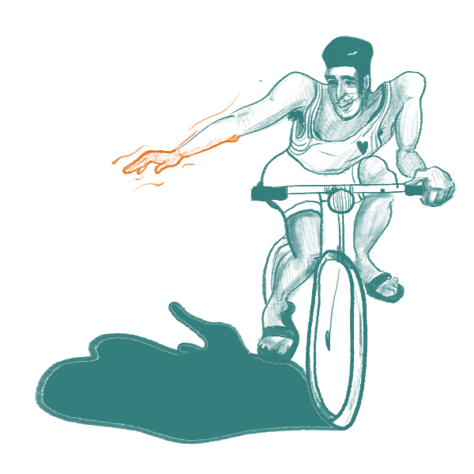

Things you SHOULD be aware of
Copenhagen is a city that is explored in a best way by biking. Even though it is very easy to bike around the city, the bicycle traffic can get a bit intense, especially during the rush hours. Therefore it is important to be aware of the biking rules and pay attention to the other people in traffic. You can find tips and biking rules listed below - by following these your you’ll be able to ride your bike safely and enjoy your biking journey to the fullest.
Remember the three main rules
Give a clear signal before turning either right or left.
Raise your hand up high before stopping.
Bike on the right side of the biking path!
If you want to turn left at an intersection, you need to cross the street to the opposite corner first. Wait for the green light before continuing your journey.
Do not ride against the traffic flow or on the sidewalks
Watch over your left shoulder before overtaking other cyclists
A short ring on the bell is often a signal meaning that another cyclist wants to pass – keep biking on the right side
Always lock your bike
Best way to do it is to double lock it
Usually you’re allowed to take your bike with you to the public transport. Please note that you are not allowed to do that during the rush hours between 7-9 AM and 3-5:30 PM.
Remember to buy a ticket also for your bicycle
Consider getting a shared bike
As many other major cities, Copenhagen has a bike share scheme that allows everyone to cycle around the city.
The bicycles feature optional electric assistance and a tablet with a navigation system.
The bicycles are located at charging stations around the city, and the bike share website guides you to available bicycles.
The price is DKK 25 per hour or DKK 70 in monthly subscription.
You can read more about the bike share program: www.bycyklen.dk/en/find-a-bycykel"Copenhagen won the title as the world's most bicycle-friendly city in 2015"
PLACES to explore in the city
Nyhavn
Show on mapTorvehallerne Food Markets
Show on mapAmager Strandpark (Amager Beach)
Show on maphttps://www.visitcopenhagen.com/copenhagen-tourist